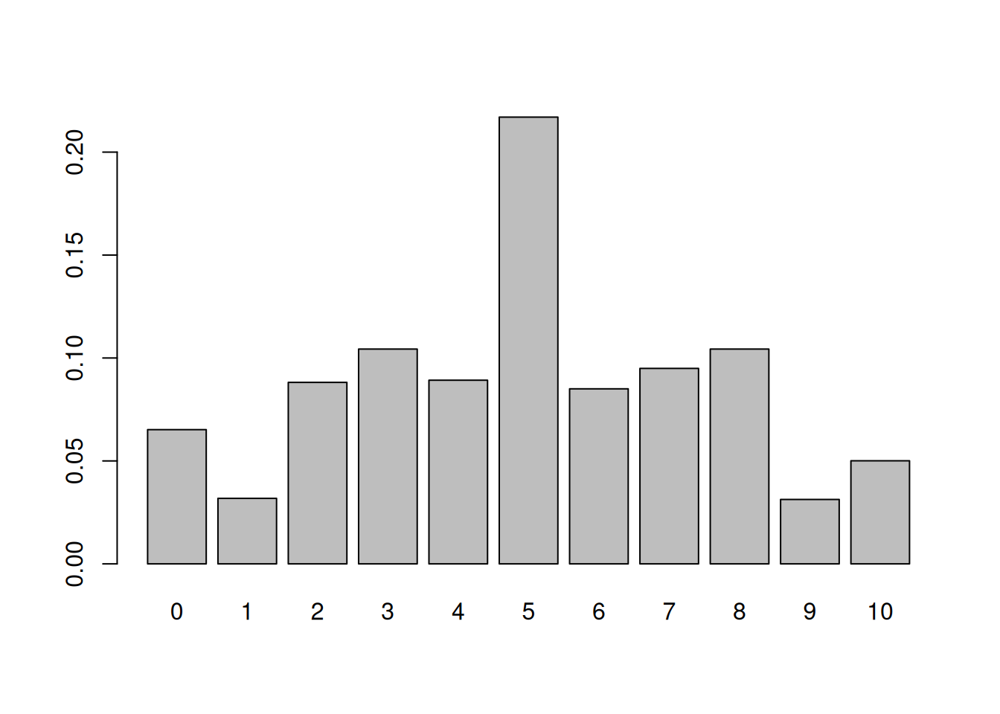
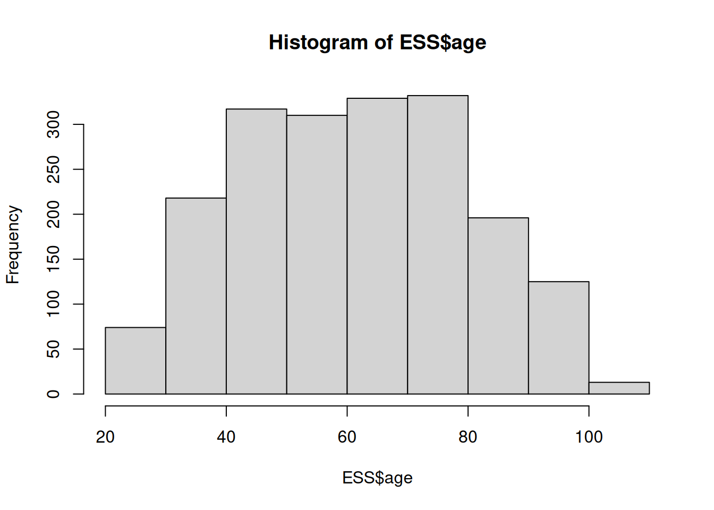

library(rio)
library(tidyverse)── Attaching core tidyverse packages ──────────────────────── tidyverse 2.0.0 ──
✔ dplyr 1.2.1 ✔ readr 2.1.6
✔ forcats 1.0.1 ✔ stringr 1.6.0
✔ ggplot2 4.0.2 ✔ tibble 3.3.1
✔ lubridate 1.9.4 ✔ tidyr 1.3.2
✔ purrr 1.2.2
── Conflicts ────────────────────────────────────────── tidyverse_conflicts() ──
✖ dplyr::filter() masks stats::filter()
✖ dplyr::lag() masks stats::lag()
ℹ Use the conflicted package (<http://conflicted.r-lib.org/>) to force all conflicts to become errorslibrary(stargazer)
Please cite as:
Hlavac, Marek (2022). stargazer: Well-Formatted Regression and Summary Statistics Tables.
R package version 5.2.3. https://CRAN.R-project.org/package=stargazer ESS<-import("https://jan-rovny.squarespace.com/s/ESS_FR.dta")
glimpse(ESS)Rows: 1,917
Columns: 13
$ essround <dbl> 7, 7, 7, 7, 7, 7, 7, 7, 7, 7, 7, 7, 7, 7, 7, 7, 7, 7, 7, 7, 7…
$ lrscale <dbl> 4, 2, 5, 7, 6, 5, 7, 10, 3, 10, 4, 6, 2, 9, 5, 10, 6, 0, 5, 5…
$ stflife <dbl> 7, 7, 9, 8, 9, 9, 6, 1, 7, 8, 2, 5, 7, 9, 7, 5, 8, 7, 5, 8, 9…
$ gincdif <dbl> 2, 2, 5, 2, 2, 3, 2, 4, 4, 2, 1, 2, 2, 2, 1, 2, 2, 1, 4, 1, 3…
$ euftf <dbl> 6, 7, 4, 3, 3, 5, 4, 2, 4, 0, 9, 10, 9, 5, 1, 4, 5, 5, 5, 5, …
$ imwbcnt <dbl> 4, 5, 5, 6, 7, 5, 6, 5, 8, 0, 8, 5, 8, 7, 0, 5, 8, 5, 5, 6, 5…
$ prtvtcfr <dbl> NA, 11, 11, NA, NA, NA, 10, 2, 9, 10, 9, NA, NA, 10, NA, 10, …
$ happy <dbl> 8, 8, 8, 7, 8, 10, 6, 3, 8, 8, 8, 8, 9, 9, 8, 8, 8, 7, 7, 8, …
$ rlgatnd <dbl> 5, 7, 7, 7, 7, 7, 6, 7, 7, 3, 5, 7, 7, 7, 3, 4, 5, 7, 7, 7, 6…
$ gndr <dbl> 2, 2, 1, 1, 2, 1, 2, 1, 1, 2, 1, 1, 2, 2, 1, 1, 1, 2, 2, 2, 1…
$ yrbrn <dbl> 1978, 1955, 1973, 1975, 1978, 1999, 1958, 1994, 1991, 1945, 1…
$ eduyrs <dbl> 11, 13, 18, 10, 17, 9, 14, 10, 19, NA, 20, 15, 14, 12, 11, 18…
$ hinctnta <dbl> 7, 8, 10, 5, 7, 8, 7, NA, 1, 5, 1, NA, 1, NA, 1, 8, 1, 5, 7, …ESS <- ESS %>% select(euftf, happy,yrbrn, eduyrs, gndr)
length(ESS$euftf)[1] 1917summary(ESS) euftf happy yrbrn eduyrs
Min. : 0.000 Min. : 0.000 Min. :1916 Min. : 0.00
1st Qu.: 3.000 1st Qu.: 6.000 1st Qu.:1950 1st Qu.:10.00
Median : 5.000 Median : 8.000 Median :1964 Median :13.00
Mean : 4.946 Mean : 7.192 Mean :1964 Mean :12.82
3rd Qu.: 7.000 3rd Qu.: 8.000 3rd Qu.:1979 3rd Qu.:16.00
Max. :10.000 Max. :10.000 Max. :2000 Max. :50.00
NA's :74 NA's :3 NA's :3 NA's :13
gndr
Min. :1.000
1st Qu.:1.000
Median :2.000
Mean :1.524
3rd Qu.:2.000
Max. :2.000
ESS <- ESS %>% mutate(age = 2026-yrbrn)
barplot(table(ESS$euftf)/length(ESS$euftf))
hist(ESS$age, breaks = 10)
ggplot(ESS, aes(x = happy, fill = factor(gndr))) +
geom_bar(position = "dodge") + theme_minimal()Warning: Removed 3 rows containing non-finite outside the scale range
(`stat_count()`).
t_test_result <- t.test(
ESS %>% filter(gndr == 1),
ESS %>% filter(gndr == 2),
alternative = "two.sided",
conf.level = 0.99,
var.equal = FALSE # Use Welch's t-test for unequal variances
)
t_test_result
Welch Two Sample t-test
data: ESS %>% filter(gndr == 1) and ESS %>% filter(gndr == 2)
t = -0.097359, df = 11313, p-value = 0.9224
alternative hypothesis: true difference in means is not equal to 0
99 percent confidence interval:
-36.47853 33.82184
sample estimates:
mean of x mean of y
343.6836 345.0119